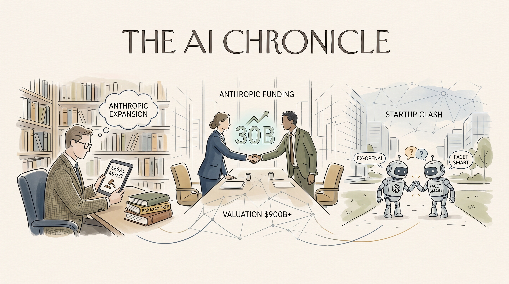

OpenAI推出Daybreak项目，旨在提升AI网络安全，但安全领域仍需改进。
两克伴AIGC日报
2026-05-13 星期三

本期关注：Android进入Gemini智能时代提升用户体验，LLM工具链模块化演进推动Agent发展，Claude Connectors增强任务执行能力，同时OpenAI面临估值与安全挑战，AI时代需警惕动机推理对真相的干扰。
📰 行业动态
OpenAI面临估值过高、产品铺开困难、组织问题等挑战。
Elon Musk曾考虑将OpenAI传给子女，但Altman称Musk对控制公司过度执着。
🔥 今日焦点
Android系统正式进入Gemini智能时代，谷歌将Gemini深度整合到Android生态中。这意味着你的手机不仅能理解文字，还能理解上下文和意图，就像一个贴心的私人助理。想象一下，当你问'帮我找找附近评价最好的意大利餐厅，还要有户外座位'，你的手机能同时理解地理位置、餐厅类型、环境偏好等多个维度，并给出精准推荐。这种整合不仅仅是简单的功能叠加，而是让Android设备真正具备了'思考'能力，能预判用户需求，提供更个性化的服务。对于普通用户来说，这可能是近几年来最直观的AI体验升级了。
***
📚 深度长文
这篇文章深入探讨了LLM工具链的最新演进，特别是0.32a2版本中引入的'atom everything'理念。作者Simon Willison揭示了如何将复杂的AI推理过程分解为可组合的原子操作，这种设计正在改变我们构建AI Agent的方式。文章详细分析了这种模块化架构如何提升系统的可维护性和可扩展性，以及它对未来AI应用开发的影响。最引人注目的是，作者展示了这种设计如何让AI Agent在处理复杂任务时表现出更强的连贯性和可靠性，同时保持代码的简洁性。这对于任何希望构建可靠AI系统的开发者来说，都是一次思维模式的革新。
***
这篇文章详细介绍了Claude Connectors这一突破性技术，展示了如何将Claude大模型无缝集成到各种日常应用中，特别是Gmail这样的主流服务。作者不仅提供了实用的技术实现指南，更深入探讨了这种连接能力如何催生新一代AI Agent的可能性。文章强调了'连接'作为AI Agent核心能力的重要性，以及它如何让AI从单纯的对话工具转变为能够主动执行任务的智能助手。作者分享的实战经验和最佳实践，对于任何希望构建实用AI Agent的开发者都具有极高的参考价值。
***
🐦 Ta们说
> "The enemy of truth is motivated reasoning."
**解读**: Naval 认为'真理的敌人是动机推理'。这句话直指人类认知偏见的核心，在AI时代尤其重要——当我们用AI服务自身利益时，可能会无意中强化偏见而非追求真相。
> "Open-source AI is ruthlessly out-innovating the trillion-dollar monopolies. 🚀
Big labs are burning billions brute-forcing AGI on massive GPU clusters. Meanwhile, the open ecosystem is structurally forced to innovate on inference—and it's working.
> "Generative AI has not made the world a better place."
**解读**: Gary Marcus 断言'生成式AI并未让世界变得更美好'。这位AI批评者的观点值得深思，它提醒我们：技术进步不等于社会进步，AI的发展需要更多伦理考量而非仅追求技术突破。
📄 重点论文
**核心贡献**: 提出了一种多智能体框架，能够从基础智能体生成的轨迹中合成单个可审计的技能，输出的是人类可读的工件，可以在使用前进行检查。
**与AI Agent的关联**: 为AI Agent的技能合成提供了新的方法，有助于提高智能体的能力，同时保持过程可重用和可控。
**核心贡献**: 提出了一种通过结构化元认知在通用智能体中进行深度推理的方法，使智能体能够灵活地切换推理模式，解决复杂问题。
**与AI Agent的关联**: 为智能体的推理能力提供了新的思路，有助于智能体在解决复杂问题时更加灵活和有效。
🛠️ 产品推荐
Recursant是一款基于网格的控制平面AI代理治理平台。该平台旨在解决大型企业中不同团队使用不同框架和运行环境导致的合规风险问题。通过统一管理AI代理，Recursant确保企业内部遵守相关法规，降低控制风险。作为一款可行的替代方案，Recursant打破了大型供应商控制堆栈的束缚，为技术从业者提供了一种高效、安全的AI代理治理解决方案。
***
AgenTank是一款创新的AI坦克游戏，用户可通过AI代理编写坦克战斗逻辑，实时观看战斗过程，并根据战斗情况提供策略反馈。通过不断训练和优化，AI代理将根据用户反馈调整坦克代码，提升战斗表现。该产品以AI技术为核心，为用户带来沉浸式的游戏体验，同时锻炼用户对AI逻辑和策略的思考能力。通过1,000+场战斗和约200美元的Claude credits投入，用户可亲眼见证AI坦克的成长与进步，体验AI技术在游戏领域的创新应用。
***